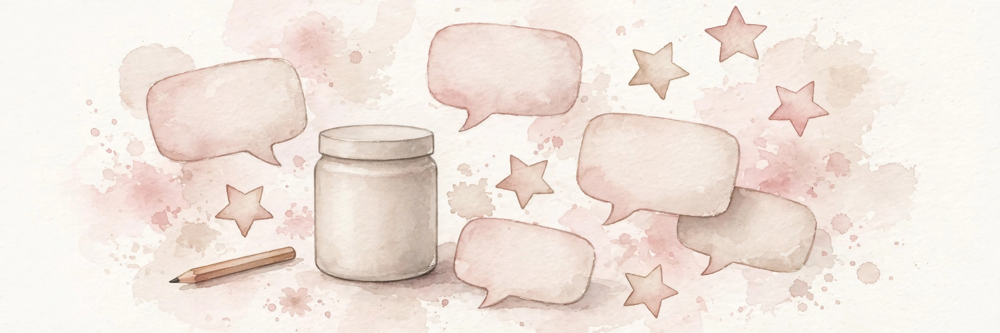

トップ ＞ インナーケア・サプリ ＞ 口コミを読む時の注意点
口コミを読む時の注意点

買い物の前に口コミを読む方は多いと思います。ただ、サプリメントの口コミは、読み方を間違えると判断を誤りやすい分野でもあります。この記事では、口コミを「情報として使う」ための注意点を整理します。
口コミは「使い方」の情報として読む
口コミの中で参考にしやすいのは、使い方に関する具体的な情報です。粒の大きさの感じ方、飲むタイミングの工夫、保管の仕方、定期購入の手続きの分かりやすさなど、生活に根ざした情報は、自分の生活と重ねて考える材料になります。逆に、身体の変化に関する感想は、その人個人の体験であり、自分の場合に当てはまるとは限りません。
私は口コミを読むとき、「事実として書かれている部分」と「感想の部分」を分けて読むようにしています。粒の数や価格は事実ですが、感じ方は感想です。
感想と、パッケージ表示は別のもの
どれだけ多くの感想が集まっていても、それがパッケージ表示の裏付けになるわけではありません。商品の情報として確かなのは、原材料名や含有量、目安量といった表示です。口コミで気になる商品を見つけたら、最後は必ず表示に戻って確認する。この順番を守ると、感想に引っ張られすぎずに済みます。
また、極端に良い評価と悪い評価は、どちらもその人の事情が強く出やすい部分です。真ん中あたりの評価に、具体的な使い方の情報が書かれていることも多くあります。
件数と時期、リニューアルにも注意する
口コミの件数が少ない場合は、たまたまの偏りの可能性もあります。投稿の時期も見ておきたい点です。古い口コミは、リニューアル前の商品についてのものかもしれません。現在の商品の表示と食い違う場合は、現在の表示が優先です。
口コミは、表示を読む力を補うための補助情報です。上手に使えば買い物の材料が増えますが、判断の中心はあくまで表示と、自分の生活に合うかどうかです。
口コミが掲載されている場所にも注意が必要です。販売ページ内の口コミは、販売側が選んで表示している場合があり、全体の傾向とは異なることがあります。外部の口コミサイトや、購入者レビューの仕組みがある通販サイトの評価もあわせて見ると、偏りが補えます。また、SNS上の感想には、広告である場合にPR表記が求められます。表記のない強いおすすめ表現を見かけたら、情報の出どころを一歩引いて考えるのが安全です。口コミは「みんなが言っているから」ではなく、「自分の生活に当てはまる具体的な情報があるか」で読む。その姿勢が、後悔のない買い物につながります。
セラフィナ「口コミは使い方の情報として、判断の中心は表示に戻して。それが読み方のコツだね」

セラフィナ｜美容の道具箱の案内役
「量と表示が分かれば、美容は失敗しない。」——セラフィナと白猫のモコが、買う前のチェックポイントを案内します。綺麗になりたい気持ちに正直に、でも表示は冷静に読むのが、このサイトの約束です。